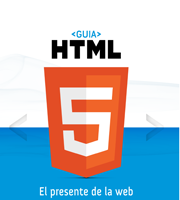
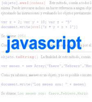

 Información basica del nuevo lenguaje estár de la web. Desarrollado por cristalab.com y maestrosdelweb.com
Información basica del nuevo lenguaje estár de la web. Desarrollado por cristalab.com y maestrosdelweb.com
 En el que comenzaremos a conocer y aplicar la sintaxis de JavaScript, lenguaje del lado del cliente.